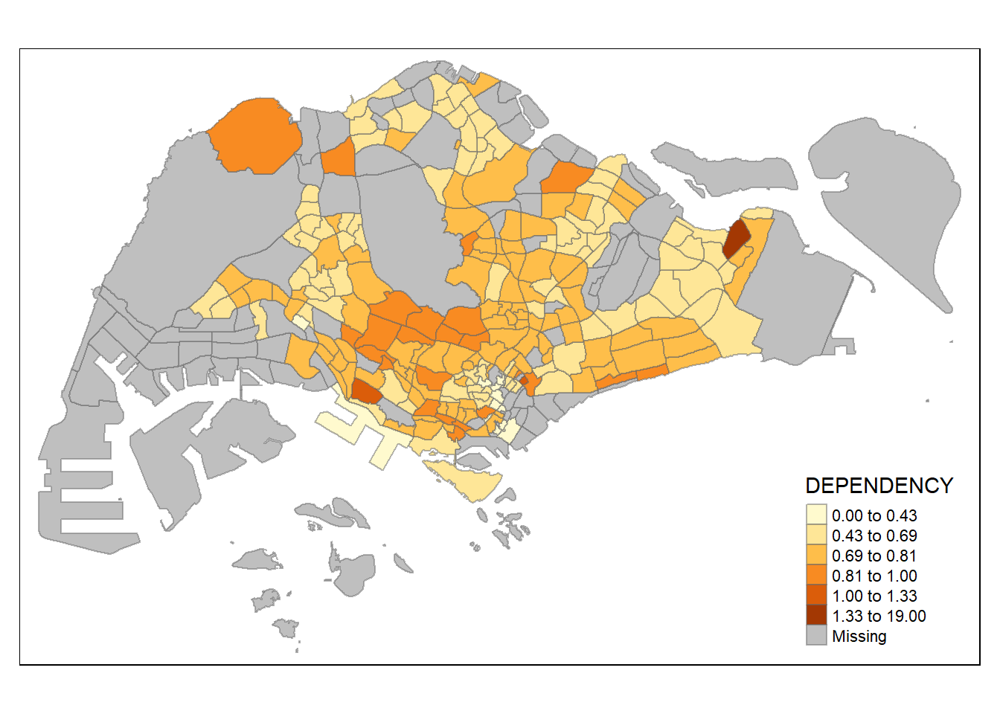
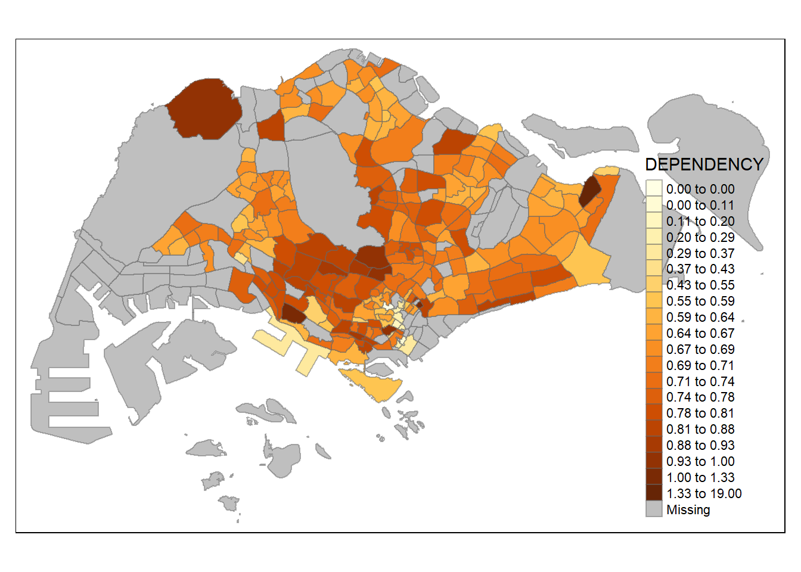

pacman::p_load(sf, tmap, tidyverse)Hands-on Exercise 7a: Choropleth Mapping with R
1 Overview
Choropleth mapping involves the symbolisation of enumeration units, such as countries, provinces, states, counties or census units, using area patterns or graduated colours. For example, a social scientist may need to use a choropleth map to portray the spatial distribution of the aged population of Singapore by Master Plan 2014 Subzone Boundary.
In this exercise, we will learn how to plot functional and truthful choropleth maps by using an R package called tmap package.
2 Getting Started
2.1 Installing and loading the packages
For this exercise, the following R packages will be used:
readr for importing delimited text file,
tidyr for tidying data,
dplyr for wrangling data and
sf for handling geospatial data.
Among the four packages, readr, tidyr and dplyr are part of tidyverse package.
2.2 Data import
Two datasets will be used to create the choropleth map. They are:
Master Plan 2014 Subzone Boundary (Web) (i.e.
MP14_SUBZONE_WEB_PL) in ESRI shapefile format. It can be downloaded at data.gov.sg This is geospatial data which consists of the geographical boundary of Singapore at the planning subzone level. The data is based on the URA Master Plan 2014.Singapore Residents by Planning Area / Subzone, Age Group, Sex and Type of Dwelling, June 2011-2020 in CSV format (i.e.
respopagesextod2011to2020.csv). This is an aspatial data file. It can be downloaded at Department of Statistics, Singapore Although it does not contain any coordinates values, its PA and SZ fields can be used as unique identifiers to geocode toMP14_SUBZONE_WEB_PLshapefile.
The code chunk below uses the st_read() function of sf package to import MP14_SUBZONE_WEB_PL shapefile into R as a simple feature data frame called mpsz.
mpsz <- st_read(dsn = "data/geospatial",
layer = "MP14_SUBZONE_WEB_PL")Reading layer `MP14_SUBZONE_WEB_PL' from data source
`C:\Vanessa\SMU\Term 4 - Visual Analytics & Applications\mvheng\ISSS608-VAA\Hands-on_Ex\Hands-on_Ex07\data\geospatial'
using driver `ESRI Shapefile'
Simple feature collection with 323 features and 15 fields
Geometry type: MULTIPOLYGON
Dimension: XY
Bounding box: xmin: 2667.538 ymin: 15748.72 xmax: 56396.44 ymax: 50256.33
Projected CRS: SVY21Let’s examine the data.
mpszSimple feature collection with 323 features and 15 fields
Geometry type: MULTIPOLYGON
Dimension: XY
Bounding box: xmin: 2667.538 ymin: 15748.72 xmax: 56396.44 ymax: 50256.33
Projected CRS: SVY21
First 10 features:
OBJECTID SUBZONE_NO SUBZONE_N SUBZONE_C CA_IND PLN_AREA_N
1 1 1 MARINA SOUTH MSSZ01 Y MARINA SOUTH
2 2 1 PEARL'S HILL OTSZ01 Y OUTRAM
3 3 3 BOAT QUAY SRSZ03 Y SINGAPORE RIVER
4 4 8 HENDERSON HILL BMSZ08 N BUKIT MERAH
5 5 3 REDHILL BMSZ03 N BUKIT MERAH
6 6 7 ALEXANDRA HILL BMSZ07 N BUKIT MERAH
7 7 9 BUKIT HO SWEE BMSZ09 N BUKIT MERAH
8 8 2 CLARKE QUAY SRSZ02 Y SINGAPORE RIVER
9 9 13 PASIR PANJANG 1 QTSZ13 N QUEENSTOWN
10 10 7 QUEENSWAY QTSZ07 N QUEENSTOWN
PLN_AREA_C REGION_N REGION_C INC_CRC FMEL_UPD_D X_ADDR
1 MS CENTRAL REGION CR 5ED7EB253F99252E 2014-12-05 31595.84
2 OT CENTRAL REGION CR 8C7149B9EB32EEFC 2014-12-05 28679.06
3 SR CENTRAL REGION CR C35FEFF02B13E0E5 2014-12-05 29654.96
4 BM CENTRAL REGION CR 3775D82C5DDBEFBD 2014-12-05 26782.83
5 BM CENTRAL REGION CR 85D9ABEF0A40678F 2014-12-05 26201.96
6 BM CENTRAL REGION CR 9D286521EF5E3B59 2014-12-05 25358.82
7 BM CENTRAL REGION CR 7839A8577144EFE2 2014-12-05 27680.06
8 SR CENTRAL REGION CR 48661DC0FBA09F7A 2014-12-05 29253.21
9 QT CENTRAL REGION CR 1F721290C421BFAB 2014-12-05 22077.34
10 QT CENTRAL REGION CR 3580D2AFFBEE914C 2014-12-05 24168.31
Y_ADDR SHAPE_Leng SHAPE_Area geometry
1 29220.19 5267.381 1630379.3 MULTIPOLYGON (((31495.56 30...
2 29782.05 3506.107 559816.2 MULTIPOLYGON (((29092.28 30...
3 29974.66 1740.926 160807.5 MULTIPOLYGON (((29932.33 29...
4 29933.77 3313.625 595428.9 MULTIPOLYGON (((27131.28 30...
5 30005.70 2825.594 387429.4 MULTIPOLYGON (((26451.03 30...
6 29991.38 4428.913 1030378.8 MULTIPOLYGON (((25899.7 297...
7 30230.86 3275.312 551732.0 MULTIPOLYGON (((27746.95 30...
8 30222.86 2208.619 290184.7 MULTIPOLYGON (((29351.26 29...
9 29893.78 6571.323 1084792.3 MULTIPOLYGON (((20996.49 30...
10 30104.18 3454.239 631644.3 MULTIPOLYGON (((24472.11 29...popdata <- read_csv("data/aspatial/respopagesextod2011to2020.csv")
popdata# A tibble: 984,656 × 7
PA SZ AG Sex TOD Pop Time
<chr> <chr> <chr> <chr> <chr> <dbl> <dbl>
1 Ang Mo Kio Ang Mo Kio Town Centre 0_to_4 Males HDB 1- and 2-Ro… 0 2011
2 Ang Mo Kio Ang Mo Kio Town Centre 0_to_4 Males HDB 3-Room Flats 10 2011
3 Ang Mo Kio Ang Mo Kio Town Centre 0_to_4 Males HDB 4-Room Flats 30 2011
4 Ang Mo Kio Ang Mo Kio Town Centre 0_to_4 Males HDB 5-Room and … 50 2011
5 Ang Mo Kio Ang Mo Kio Town Centre 0_to_4 Males HUDC Flats (exc… 0 2011
6 Ang Mo Kio Ang Mo Kio Town Centre 0_to_4 Males Landed Properti… 0 2011
7 Ang Mo Kio Ang Mo Kio Town Centre 0_to_4 Males Condominiums an… 40 2011
8 Ang Mo Kio Ang Mo Kio Town Centre 0_to_4 Males Others 0 2011
9 Ang Mo Kio Ang Mo Kio Town Centre 0_to_4 Females HDB 1- and 2-Ro… 0 2011
10 Ang Mo Kio Ang Mo Kio Town Centre 0_to_4 Females HDB 3-Room Flats 10 2011
# ℹ 984,646 more rows2.3 Data Preparation
Before a thematic map can be prepared, we are required to prepare a data table with year 2020 values. The data table should include the variables PA, SZ, YOUNG, ECONOMY ACTIVE, AGED, TOTAL, and DEPENDENCY.
YOUNG: age group 0 to 4 until age group 20 to 24,
ECONOMY ACTIVE: age group 25-29 until age group 60-64,
AGED: age group 65 and above,
TOTAL: all age groups, and
DEPENDENCY: the ratio between young and aged against the economy active group
The following data wrangling and transformation functions will be used:
pivot_wider()of tidyr package, andmutate(),filter(),group_by()andselect()of dplyr package
popdata2020 <- popdata %>%
filter(Time == 2020) %>%
group_by(PA, SZ, AG) %>%
summarise(`POP` = sum(`Pop`)) %>%
ungroup() %>%
pivot_wider(names_from = AG,
values_from = POP)
popdata2020 <- popdata2020 %>%
mutate(YOUNG = rowSums(.[3:6]) + rowSums(.[14])) %>%
mutate(`ECONOMY ACTIVE` = rowSums(.[7:13]) + rowSums(.[15]))%>%
mutate(`AGED`=rowSums(.[16:21])) %>% mutate(`TOTAL`=rowSums(.[3:21])) %>%
mutate(`DEPENDENCY` = (`YOUNG` + `AGED`)/`ECONOMY ACTIVE`) %>%
select(`PA`, `SZ`, `YOUNG`,
`ECONOMY ACTIVE`, `AGED`,
`TOTAL`, `DEPENDENCY`)Before we can perform the georelational join, one extra step is required to convert the values in PA and SZ fields to uppercase. This is because the values of PA and SZ fields are made up of upper- and lowercase. On the other, hand the SUBZONE_N and PLN_AREA_N are in uppercase.
popdata2020 <- popdata2020 %>%
mutate_at(.vars = vars(PA, SZ),
.funs = list(toupper)) %>%
filter(`ECONOMY ACTIVE` > 0) Next, left_join() of dplyr is used to join the geographical data and attribute table using planning subzone name e.g. SUBZONE_N and SZ as the common identifier.
mpsz_pop2020 <- left_join(mpsz, popdata2020,
by = c("SUBZONE_N" = "SZ"))left_join() of dplyr package is used with mpsz simple feature data frame as the left data table is to ensure that the output will be a simple features data frame.
write_rds(mpsz_pop2020, "data/rds/mpszpop2020.rds")3 Choropleth Mapping Geospatial Data Using tmap
Two approaches can be used to prepare a thematic map using tmap, they are:
Plotting a thematic map quickly by using
qtm().Plotting highly customisable thematic maps by using tmap elements.
3.1 Plotting a choropleth map quickly by using qtm()
The easiest and quickest to draw a choropleth map using tmap is using qtm(). It is concise and provides a good default visualisation in many cases.
The code chunk below will draw a cartographic standard choropleth map as shown below.
tmap_mode("plot")
qtm(mpsz_pop2020, fill = "DEPENDENCY")
Note
tmap_mode()with “plot” option is used to produce a static map. For interactive mode, “view” option should be used.fillargument is used to map the attribute (i.e. DEPENDENCY)
3.2 Creating a choropleth map by using tmap’s elements
Despite its usefulness in drawing a choropleth map quickly and easily, the disadvantage of qtm() is that it makes the aesthetics of individual layers harder to control. To draw a high-quality cartographic choropleth map as shown in the figure below, tmap’s drawing elements should be used.
tm_shape(mpsz_pop2020) +
tm_fill("DEPENDENCY",
style = "quantile",
palette = "Blues",
title = "Dependency ratio") +
tm_layout(main.title = "Distribution of Dependency Ratio by planning subzone",
main.title.position = "center",
main.title.size = 1.2,
legend.height = 0.45,
legend.width = 0.35,
frame = TRUE) +
tm_borders(alpha = 0.5) +
tm_compass(type="8star", size = 2) +
tm_scale_bar() +
tm_grid(alpha =0.2) +
tm_credits("Source: Planning Sub-zone boundary from Urban Redevelopment Authority (URA)\n and Population data from Department of Statistics DOS",
position = c("left", "bottom"))In the following sub-section, we will explore how tmap functions are used to plot these elements.
The basic building block of tmap is tm_shape() followed by one or more layer elements such as tm_fill() and tm_polygons().
In the code chunk below, tm_shape() is used to define the input data (i.e mpsz_pop2020) and tm_polygons() is used to draw the planning subzone polygons.
tm_shape(mpsz_pop2020) +
tm_polygons()
Draw a choropleth map
To draw a choropleth map showing the geographical distribution of a selected variable by planning subzone, we just need to assign the target variable such as Dependency to tm_polygons().
tm_shape(mpsz_pop2020) +
tm_polygons("DEPENDENCY")
Note
The default interval binning used to draw the choropleth map is called “pretty”.
The default colour scheme used is YlOrRd of ColorBrewer.
By default, missing values will be shaded in grey.
Actually, tm_polygons() is a wraper of tm_fill() and tm_border(). tm_fill() shades the polygons by using the default colour scheme and tm_borders() adds the borders of the shapefile onto the choropleth map.
The code chunk below draws a choropleth map by using tm_fill() alone.
tm_shape(mpsz_pop2020) +
tm_fill("DEPENDENCY") +
tm_borders(lwd = 0.1, alpha = 1)
The planning subzones are shared according to the respective dependency values.
The light-grey border lines have been added to the choropleth map.
These are the arguments for tm_borders() to change the asethestic:
alpha = the transparency number between 0 (totally transparent) and 1 (not transparent). The default is 1.
col = border colour
lwd = border line width. The default is 1.
lty = borderline type. The default is “solid”.
3.3 Data classification methods of tmap
Most choropleth maps employ some methods of data classification. The point of classification is to take a large number of observations and group them into data ranges or classes.
tmap provides a total of ten data classification methods, namely: fixed, sd, equal, pretty (default), quantile, kmeans, hclust, bclust, fisher, and jenks.
To define a data classification method, the style argument of tm_fill() or tm_polygons() will be used.
The code chunk below shows a quantile data classification that used 5 classes and ‘jenks’ style.
tm_shape(mpsz_pop2020)+
tm_fill("DEPENDENCY",
n = 5,
style = "jenks") +
tm_borders(alpha = 0.5)
The code chunk below shows a quantile data classification that used 5 classes and ‘equal’ style.
tm_shape(mpsz_pop2020)+
tm_fill("DEPENDENCY",
n = 5,
style = "equal") +
tm_borders(alpha = 0.5)
Warning: Maps Lie!
The distribution of quantile data classification using ‘jenks’ method is more evenly distributed than ‘equal’ method.
Hence, when preparing choropleth maps, we should use different classification methods supported by tmap and compare their differences.
We should also use similar classification method but with different numbers of classes (i.e. 2, 6, 10, 20) and compare the differences.
tm_shape(mpsz_pop2020)+
tm_fill("DEPENDENCY",
n = 2,
style = "jenks") +
tm_borders(alpha = 0.5)
tm_shape(mpsz_pop2020)+
tm_fill("DEPENDENCY",
n = 6,
style = "jenks") +
tm_borders(alpha = 0.5)
tm_shape(mpsz_pop2020) +
tm_fill("DEPENDENCY",
n = 10,
style = "jenks") +
tm_borders(alpha = 0.5)
tm_shape(mpsz_pop2020) +
tm_fill("DEPENDENCY",
n = 20,
style = "jenks") +
tm_borders(alpha = 0.5)
For our data, it is not suitable to use a big number of classes, as we can see all the 19 classes are for the dependency range from 0 to 1.33 (too granular).
For all the built-in styles, the category breaks are computed internally. In order to override these defaults, the breakpoints can be set explicitly using the breaks argument to the tm_fill(). It is important to note that, in tmap the breaks include a minimum and maximum. As a result, to end up with n categories, n+1 elements must be specified in the breaks option (the values must be in increasing order).
Let’s get some descriptive statistics on the variable first before setting the breakpoints. The code chunk below will be used to compute and display the descriptive statistics of the DEPENDENCY field.
summary(mpsz_pop2020$DEPENDENCY) Min. 1st Qu. Median Mean 3rd Qu. Max. NA's
0.0000 0.6519 0.7025 0.7742 0.7645 19.0000 92 Based on the results above, we set breakpoints at 0.60, 0.70, 0.80, and 0.90. In addition, we also need to include a minimum and maximum, which we set at 0 and 1.
Now, we will plot the choropleth map by using the code chunk below.
tm_shape(mpsz_pop2020) +
tm_fill("DEPENDENCY",
breaks = c(0, 0.60, 0.70, 0.80, 0.90, 1.00)) +
tm_borders(alpha = 0.5)
3.4 Colour Scheme
tmap supports colour ramps either defined by the user or a set of predefined colour ramps from the RColorBrewer package.
To change the colour, we assign the preferred colour to palette argument of tm_fill() as shown in the code chunk below.
tm_shape(mpsz_pop2020)+
tm_fill("DEPENDENCY",
n = 6,
style = "quantile",
palette = "Blues") +
tm_borders(alpha = 0.5)
To reverse the colour shading, add a “-” prefix.
tm_shape(mpsz_pop2020) +
tm_fill("DEPENDENCY",
style = "quantile",
palette = "-Blues") +
tm_borders(alpha = 0.5)3.5 Map Layouts
Map layout refers to the combination of all map elements into a cohesive map. Map elements include among other objects to be mapped, the title, the scale bar, the compass, margins and aspect ratios.
In tmap, several legend options are provided to change the placement, format and appearance of the legend.
tm_shape(mpsz_pop2020) +
tm_fill("DEPENDENCY",
style = "jenks",
palette = "Blues",
legend.hist = TRUE,
legend.is.portrait = TRUE,
legend.hist.z = 0.1) +
tm_layout(main.title = "Distribution of Dependency Ratio by planning subzone \n(Jenks classification)",
main.title.position = "center",
main.title.size = 1,
legend.height = 0.45,
legend.width = 0.35,
legend.outside = FALSE,
legend.position = c("right", "bottom"),
frame = FALSE) +
tm_borders(alpha = 0.5)
tmap allows a wide variety of layout settings to be changed. They can be called by using tmap_style().
The code chunk below shows the classic style is used.
tm_shape(mpsz_pop2020) +
tm_fill("DEPENDENCY",
style = "quantile",
palette = "-Greens") +
tm_borders(alpha = 0.5) +
tmap_style("classic")
Beside map style, tmap also also provides arguments to draw other map furniture such as compass, scale bar and grid lines.
In the code chunk below, tm_compass(), tm_scale_bar() and tm_grid() are used to add compass, scale bar and grid lines onto the choropleth map.
tm_shape(mpsz_pop2020)+
tm_fill("DEPENDENCY",
style = "quantile",
palette = "Blues",
title = "No. of persons") +
tm_layout(main.title = "Distribution of Dependency Ratio \nby planning subzone", main.title.position = "center",
main.title.size = 1.2,
legend.height = 0.45,
legend.width = 0.35,
frame = TRUE) +
tm_borders(alpha = 0.5) +
tm_compass(type="8star", size = 2) +
tm_scale_bar(width = 0.15) +
tm_grid(lwd = 0.1, alpha = 0.2) +
tm_credits("Source: Planning Sub-zone boundary from Urban Redevelopment Authority (URA)\n and Population data from Department of Statistics DOS",
position = c("left", "bottom"))To reset the default style, refer to the code chunk below.
tmap_style("white")3.6 Drawing Small Multiple Choropleth Maps
Small multiple maps, also referred to as facet maps, are composed of many maps arranged side-by-side, and sometimes stacked vertically. Small multiple maps enable the visualisation of how spatial relationships change with respect to another variable, such as time.
In tmap, small multiple maps can be plotted in three ways:
by assigning multiple values to at least one of the asthetic arguments,
by defining a group-by variable in
tm_facets(), andby creating multiple stand-alone maps with
tmap_arrange().
In this example, small multiple choropleth maps are created by defining ncols in tm_fill().
tm_shape(mpsz_pop2020)+
tm_fill(c("YOUNG", "AGED"),
style = "equal",
palette = "Blues") +
tm_layout(legend.position = c("right", "bottom")) +
tm_borders(alpha = 0.5) +
tmap_style("white")
In this example, small multiple choropleth maps are created by assigning multiple values to tm_polygons() with different palette.
tm_shape(mpsz_pop2020) +
tm_polygons(c("DEPENDENCY","AGED"),
style = c("equal", "quantile"),
palette = list("Blues","Greens")) +
tm_layout(legend.position = c("right", "bottom"))
In this example, multiple small choropleth maps are created by using tm_facets().
tm_shape(mpsz_pop2020) +
tm_fill("DEPENDENCY",
style = "quantile",
palette = "Blues",
thres.poly = 0) +
tm_facets(by="REGION_N",
free.coords=TRUE,
drop.shapes=FALSE) +
tm_layout(legend.show = FALSE,
title.position = c("center", "center"),
title.size = 20) +
tm_borders(alpha = 0.5)
In this example, multiple small choropleth maps are created by creating multiple stand-alone maps with tmap_arrange().
youngmap <- tm_shape(mpsz_pop2020) +
tm_polygons("YOUNG",
style = "quantile",
palette = "Blues")
agedmap <- tm_shape(mpsz_pop2020) +
tm_polygons("AGED",
style = "quantile",
palette = "Blues")
tmap_arrange(youngmap, agedmap, asp=1, ncol=2)
3.7 Mapping Spatial Object Meeting a Selection Criterion
Instead of creating small multiple choropleth maps, we can also use a selection function to map spatial objects meeting the selection criterion.
tm_shape(mpsz_pop2020[mpsz_pop2020$REGION_N=="CENTRAL REGION", ]) +
tm_fill("DEPENDENCY",
style = "quantile",
palette = "Blues",
legend.hist = TRUE,
legend.is.portrait = TRUE,
legend.hist.z = 0.1) +
tm_layout(legend.outside = TRUE,
legend.height = 0.45,
legend.width = 5.0,
legend.position = c("right", "bottom"),
frame = FALSE) +
tm_borders(alpha = 0.5)